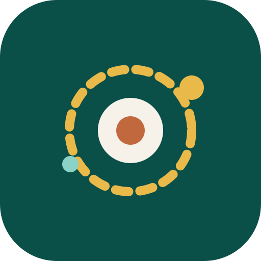

HomeOrbit
Mobile setupConnect to your family server
HomeOrbit runs on your Mac Studio. Enter the private HTTPS address your family uses to reach it, or scan the QR code shown by the server administrator.
Where do I find this address?
Use the address configured for your household, for example a Tailscale HTTPS name or a trusted LAN address. The server must be reachable from this device and must run the HomeOrbit web app. Model servers (Ollama/ComfyUI) are never connected to directly — all AI work stays on the server.
For a trusted LAN test you may use http://192.168.1.20:3000. Outside the home,
always use HTTPS through a VPN or authenticated gateway.
The app contains no AI model. Conversations, images, memories and family data stay on your server.